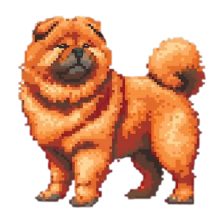
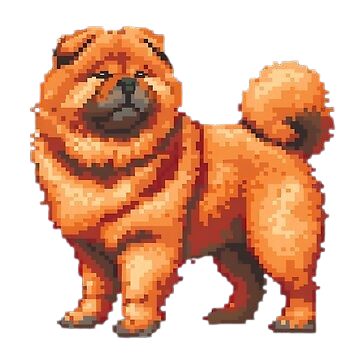

THE END
These past weeks have been insane.
I left with a watermelon in my bag.
I almost missed the bus.
I teleported to Sevilla—because someone didn't have time to design another airport level.
I nearly got tackled by my hostel roommates.
I saw beautiful places and met amazing people, and somehow… I grew a little.
I laughed. I got angry. Maybe I even cried a little.
But in the end, I was there with the others.
In a foreign country, we became a crew.
For that… I am deeply thankful.
To my classmates, our teachers, and to Marcos—gracias for these two unforgettable weeks in Sevilla.
The journey is over…
But the memories will stay with me forever.
I am surprised by how much I grow through stepping outside my comfort zone.
It's not always easy—sometimes it's messy, sometimes it's scary—but every challenge brings something new.
I discover more about myself with each unfamiliar place, each unexpected situation.
I learn to adapt, to find my own way, and to appreciate the people who join me on this journey.
In the end, what I thought would be just a trip becomes a chance to become a better version of myself.
GAME OVER
ERASMUS QUEST
A game by
Ionel Rares
SPECIAL THANKS
Marcos - For the JavaScript lessons
Teachers - For guiding us
Classmates - For the memories
Sevilla - For hosting us
Sevilla 2025